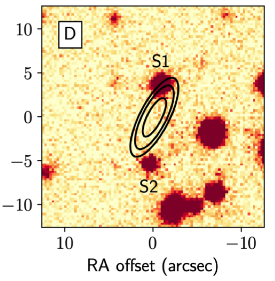

FRB 190523
Image from Ravi et al., 2019, Nature, 572, 352. The image is centered on coordinates (J2000) RA 13:48:15.6, DEC +72:28:11.
Summary
- Detected by: DSA-10
- FRB coordinates (RA, Dec): 13:48:15.60 +72:28:10.9 (J2000)
- Host coordinates (RA, Dec): 13:48:15.43 +72:28:14.4 (J2000)
- Redshift: 0.6600
- Observed DM: 760.8 pc cm-3
- Repeating: No
- References: 2019Natur.572..352R